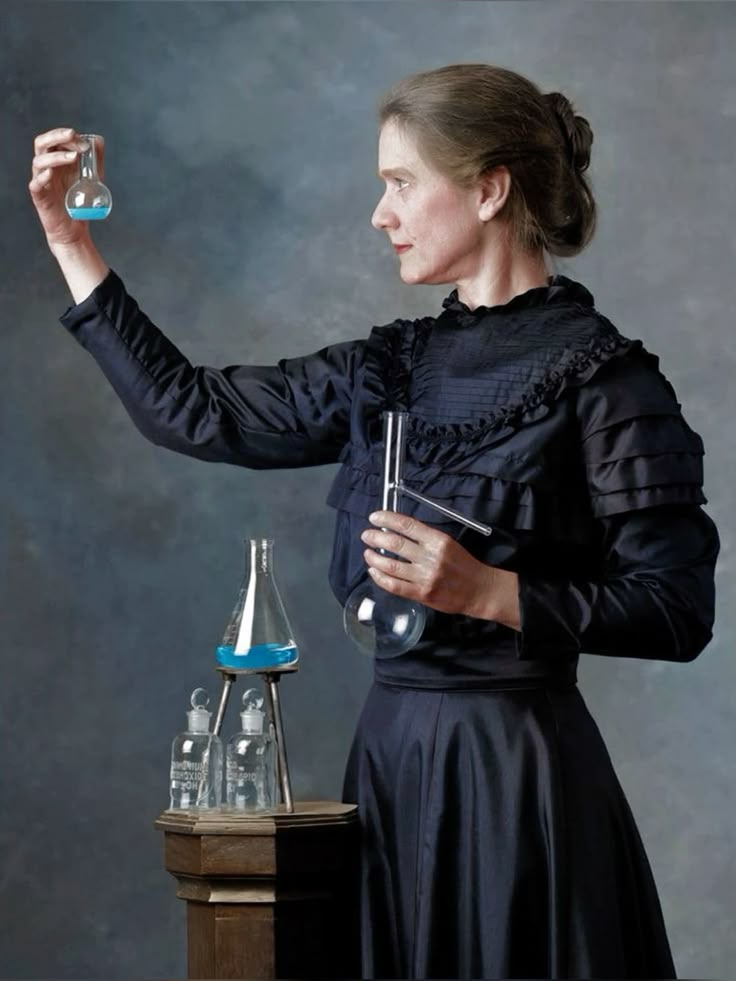

| Year | Event |
|---|---|
| 1867 | Born in Warsaw, Poland |
| 1891 | Moved to Paris to study at Sorbonne |
| 1898 | Discovered Polonium and Radium |
| 1903 | Won Nobel Prize in Physics |
| 1911 | Won Nobel Prize in Chemistry |
| 1934 | Died due to radiation exposure |
Famous Quote
"Nothing in life is to be feared, it is only to be understood." Learn More